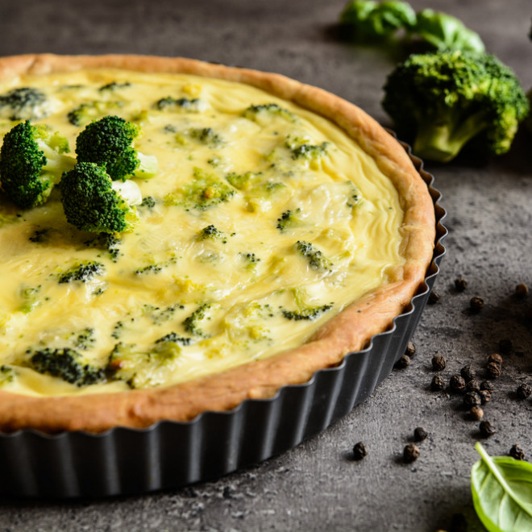

Quiche
 2 persons
2 persons 1h
1h Source
Source Salty
Salty

1puff pastry
Preheat the oven at 180°C. Butter a pie dish and place the puff pastry on it. Use a fork to place holes on the pastry.
Batter
250 gcreme fraiche100 ggrated cheese2eggs
In a bowl, mix the eggs, cream, cheese and salt. Whisk until combined.
Filling
500 gbroccoli
Rinse the broccoli and boil them in salt water for 4 minutes. Drain.
1bell pepper, diced1onion, minced
Fry a bell paper and an onion in a pan until slightly brown. Add to the broccoli
Baking
Add the filling to the batter and place in the crust. Bake in the oven for about 45 minutes.